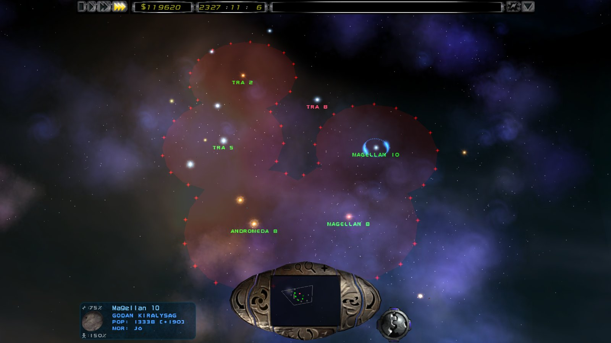
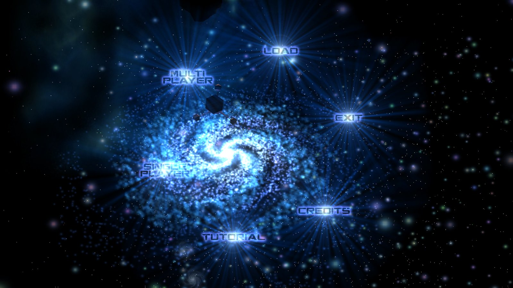

The original's rules, bit for bit
The simulation matches recordings of the original game tick for tick. Your original save games load and play on.
The original game, tick for tick, rebuilt for multiplayer, modern displays and today's hardware. It reads the graphics, voices and rules from your own copy of the game; nothing of the original is shipped.
You need Imperium Galactica II from GOG. Linux and other platforms: build from source.

Classic by default: it looks, sounds and handles like the original. Every deliberate change is an opt-in enhanced option with a written decision record.
The simulation matches recordings of the original game tick for tick. Your original save games load and play on.
LAN discovery, direct IP, private rooms with join codes, optional UPnP / NAT-PMP port mapping, rejoin after a drop, host migration and multiplayer saves.
Any resolution and refresh rate, high DPI, 4K and ultrawide. Window, borderless or fullscreen, with an optional 4:3 letterbox.
No original code, assets or rule values in the repository. Formats and rules are documented from scratch in an open knowledge base.
The game still thinks at the original's 20 ticks a second, so the rules stay exact. Your monitor draws as often as it can, and openIG2 interpolates every frame between two ticks.
The campaigns, scenarios, skirmish, the tutorial and multiplayer, with all of the original's screens.

The client finds the game by itself (GOG registry, GOG Galaxy, the usual folders). If it can't, its window lists where it looked, and you can drop the game's folder onto it.
Install Imperium Galactica II from GOG.
Get openig2-<version>-windows-x64.zip from the
releases page.
Unzip it next to ig2.exe and run ig2-client.exe.
ig2-check.exe lists any game file that fails to load.
# stable Rust toolchain, game installed $ git clone https://github.com/openIG2-org/openIG2 $ cd openIG2/engine $ cargo run --release -p ig2-client
Always build with --release. Set IG2_INSTALL_DIR only to pick
a specific install. Details in BUILDING.md.
Long games run without errors. Some late campaign stretches and rare screen states are still being checked against the original. Expect bugs, and please report them.
ig2.exe.ig2-check loads every file of the install.